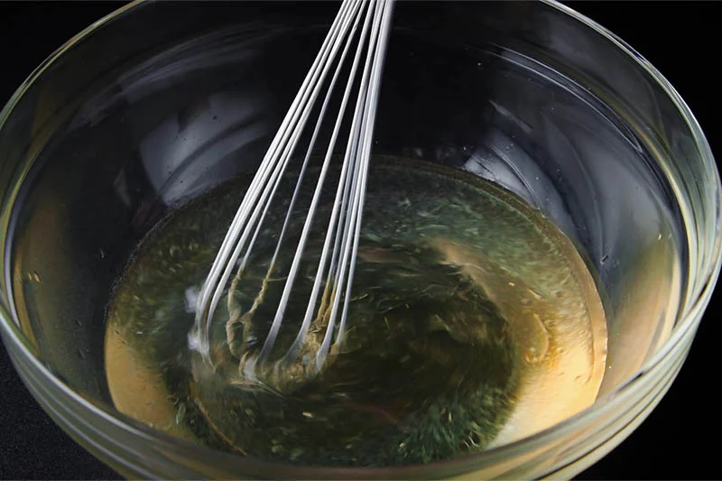
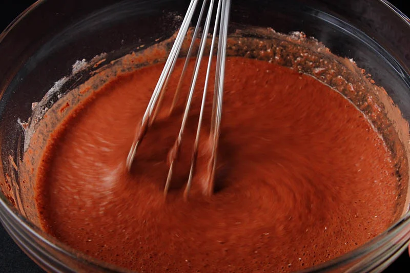
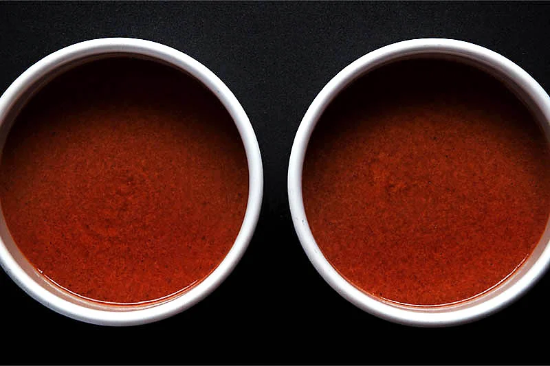
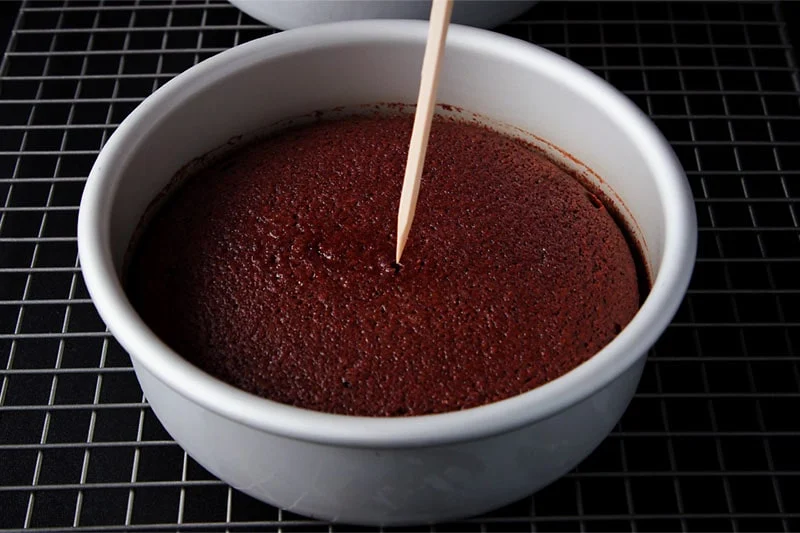
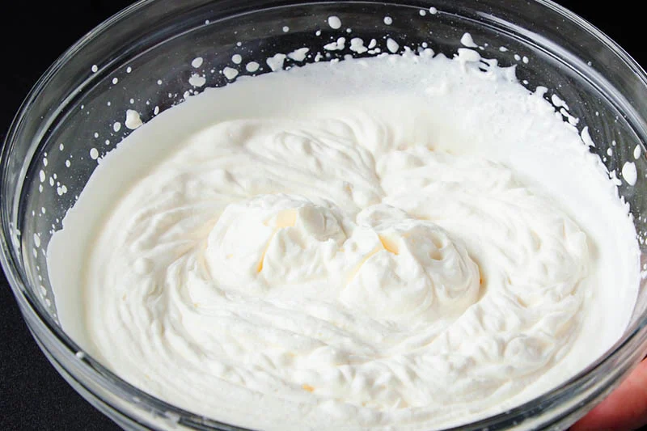
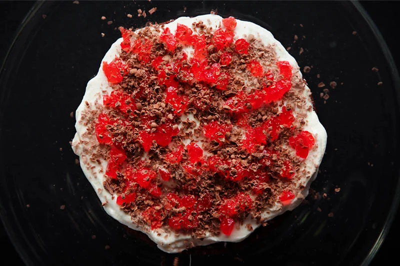
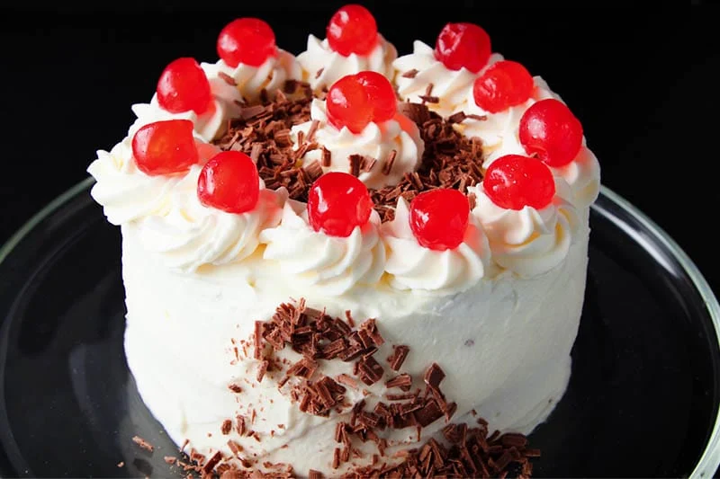
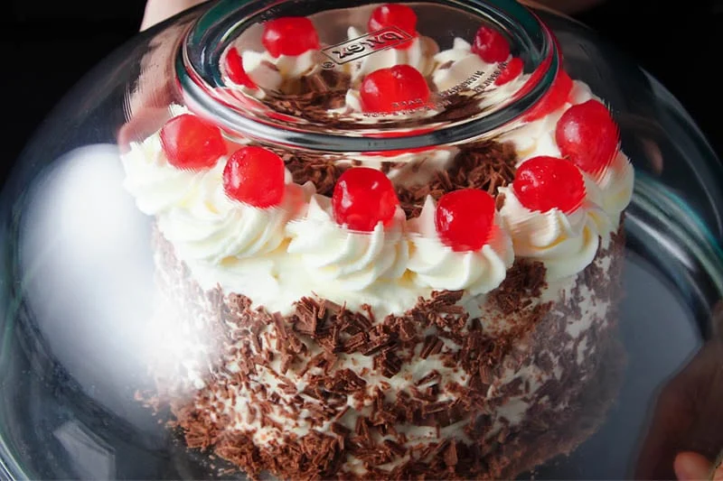

Black Forest Cake Recipe (Whole Wheat)
This easy recipe for Eggless Black Forest Cake is not only delicious, it is also made a little healthier by using whole wheat flour. Don’t worry though, this yummy eggless black forest cake recipe still boasts a fabulous taste and texture that’ll have your guests coming back for more.

How to Make Eggless Black Forest Cake
Sift Dry Ingredients & Mix Liquid Ingredients
1. Preheat your oven to 200 degrees Celsius/392 degrees Fahrenheit. Brush or grease a 7.5 inches pan or two 6 inches baking pans with oil. Instead of brushing the pans with oil, choose to line them with parchment paper.
2. Sift or sieve 1 cup whole wheat flour, 3 tablespoons cocoa powder, a pinch of salt, ½ teaspoon baking soda onto a plate. Be sure to use good quality cocoa powder.
3. in another pan or bowl, take ¾ cup sugar and add 1 cup cold water.
4. Stir so that the sugar dissolves.
5. Add ¼ cup neutral tasting oil. I added sunflower oil, but vegetable oil, avocado oil or canola oil will all work.
6. Stir briskly so that everything is mixed well.
7. Add 1 tablespoon lemon juice. If you do not have lemon juice, use 1 tablespoon apple cider vinegar or white vinegar.
8. Now add ½ teaspoon vanilla extract.
9. Stir and mix well briskly for 2 to 3 minutes to get an even emulsified mixture.
Make Cake Batter
10. Add the sieved dry ingredients to the wet mixture.
11. Using a wired whisk, mix everything well. There should be no lumps in the cake batter.
12. As you can see, the batter is not thick but medium thin.
13. Pour the cake batter in a greased cake pan of 7.5 inches diameter x 2 inches height. Or use two round cake pans (6 inches diameter) and divide the batter equally between two pans as I have done.
Bake Chocolate Sponge
14. Place the pans in the center rack of your oven. Bake the cakes in a preheated oven for 200 degrees Celsius/392 Fahrenheit for 35 to 40 mins. Since temperatures vary from oven to oven, do keep an eye on your cakes.
For baking in a convection mode of microwave oven, preheat the oven at 180 degrees celsius for 15 minutes. Then bake the cake at 180 degrees celsius for 30 to 35 minutes.
For doneness, check the cake with a toothpick. The toothpick should come out clean. If the toothpick is sticky, then place the cake back in the oven and continue to bake for some more minutes.
Whip Cream
Before frosting, let the cakes cool completely. Place the pans on a wired tray and let the cakes cool at room temperature. I make the cakes a day ahead and refrigerate them in a covered container.
15. In a bowl take 200 ml chilled whipping cream and 5 tablespoons icing sugar (a.k.a confectioner’s sugar or powdered sugar).
16. At the highest speed, whip until the cream becomes stiff. This process will vary depending on the power of your mixer and the fat content in the cream.
It may take 8 to 10 minutes if you use the Indian brand of Amul cream. To check, just invert the bowl. If the cream does not fall, the cream has stiff peaks.
17. Here’s the consistency of the cream.
Assemble & Frost Sponge Layers
18. Place one layer of the cake with the bottom side facing you.
Brush the cake lightly and evenly with sugar syrup. To make sugar syrup, dissolve 1 tablespoon sugar with 3 tablespoon water. You can also use rum or wine instead of water.
19. Now with a spatula spread about ¼ or ⅓ of the whipped cream on top of the cake.
20. Then add a layer of finely chopped red cherries. You can use canned red cherries, glazed cherries or fresh sweet cherries.
If you live in India, use glazed red cherries or you can use candied Karonda berries. You will find the Indian variety of candied karonda berries in most shops. They are also called karonda murabba in Hindi.
21. Sprinkle grated chocolate or chocolate shavings all over. I always grate or shave a bar of dark chocolate. Use any good quality semi-sweet, dark or bitter-sweet chocolate.
22. Cover with the second cake and brush the top with the sugar syrup.
23. Spread again ⅓ part of the cream on the top evenly. Spread on the sides of the cake too. If you have a rotating cake stand, this will make frosting the cake much easier.
Make Eggless Black Forest Cake
24. Add the remaining whipped cream in a piping bag and use any decorative nozzle. Decorate the cake however you like – I simply piped some rosettes around the top edge.
Don’t worry about design flaws as we will be adding more grated chocolate on the cakes, so any imperfections can be hidden!
25. Place whole cherries on the cake. Top with some chocolate shavings or grated chocolate.
You can add the amount of cherries you want to make a neat looking eggless black forest cake. I suggest using one cherry per serving, as this will help you cut the cake evenly.
26. Now cover the sides of the cake with the chocolate shavings. Cup your fingers and take some chocolate shavings in them. Gently pat and press them on the cream layer with your fingers.
Turn the cake stand as you go on placing the chocolate shavings on the cream layer all over the sides. Some chocolate shavings will fall on the the cake stand. Collect these and use them for the decoration on the sides.
27. Cover the eggless black forest cake with a large bowl without it touching the sides and place in the fridge for the cream icing to set. Keep to set for 3 to 4 hours or overnight.
28. When the cream icing has set well, slice and serve eggless black forest cake. Enjoy the compliments of your impressed friends and family. Good work!